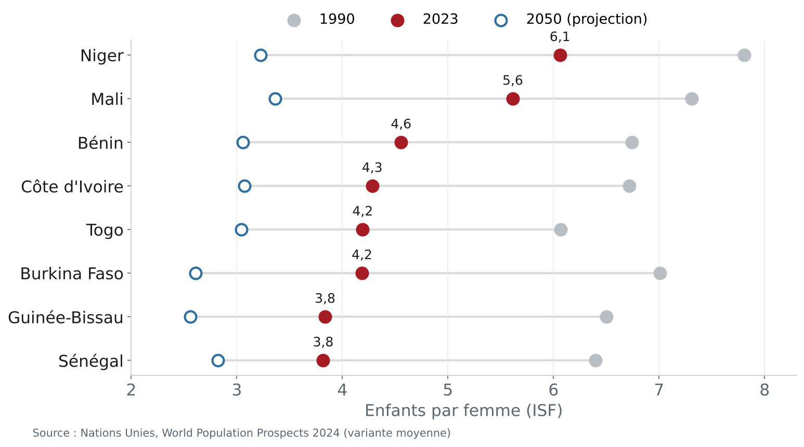
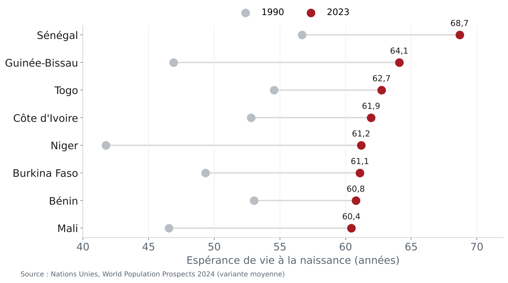
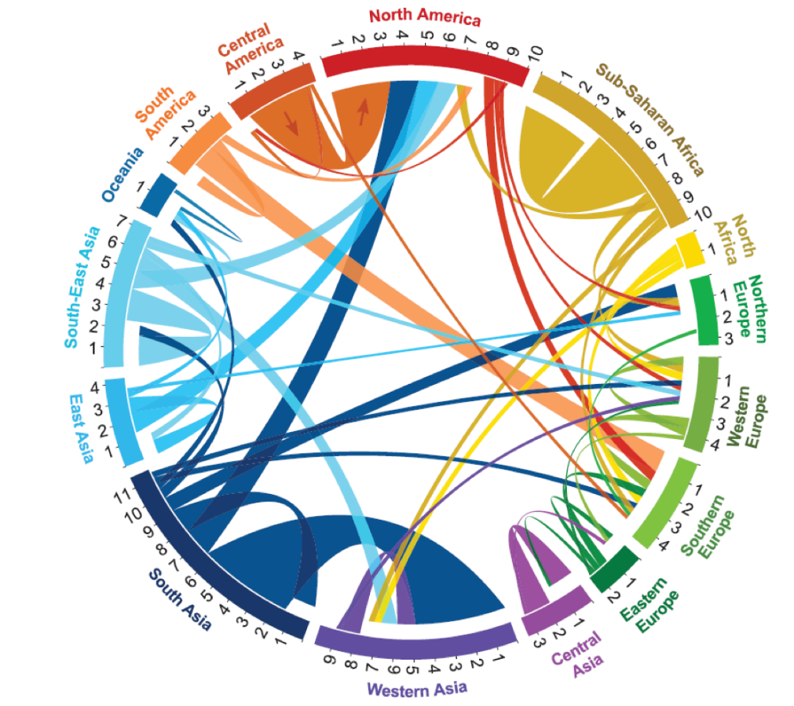
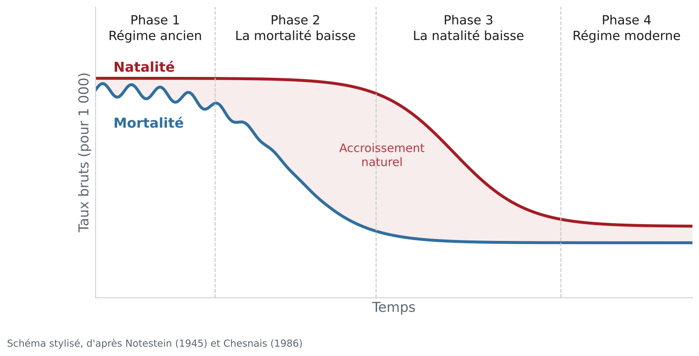
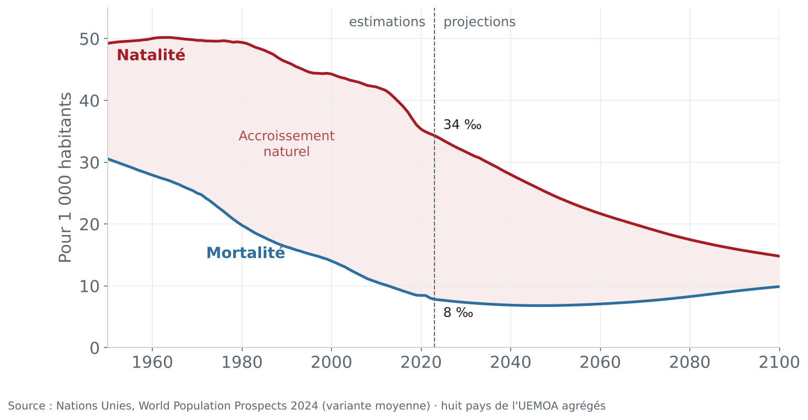
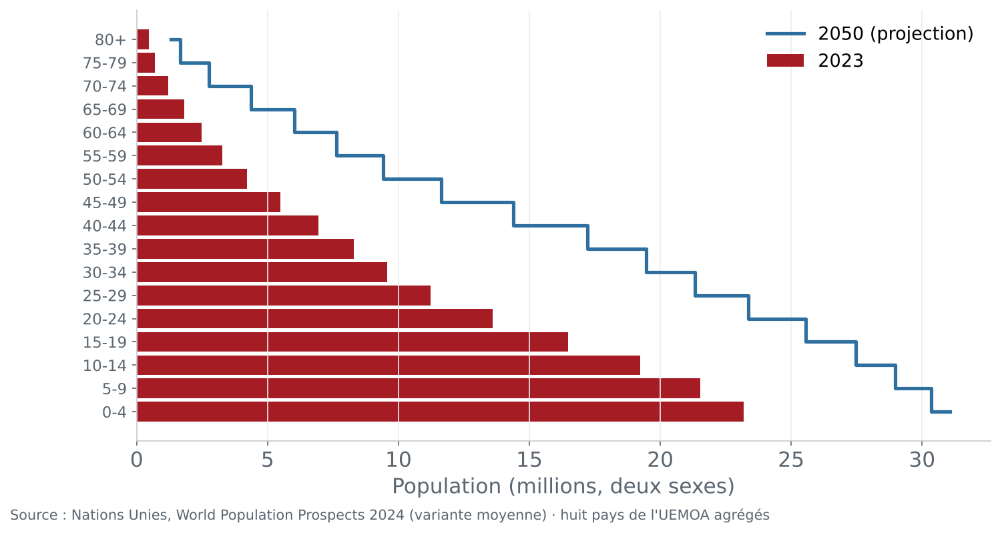
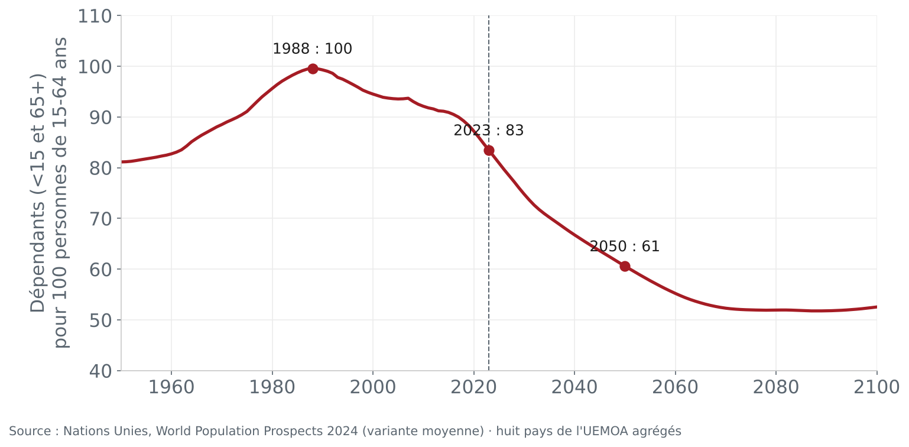
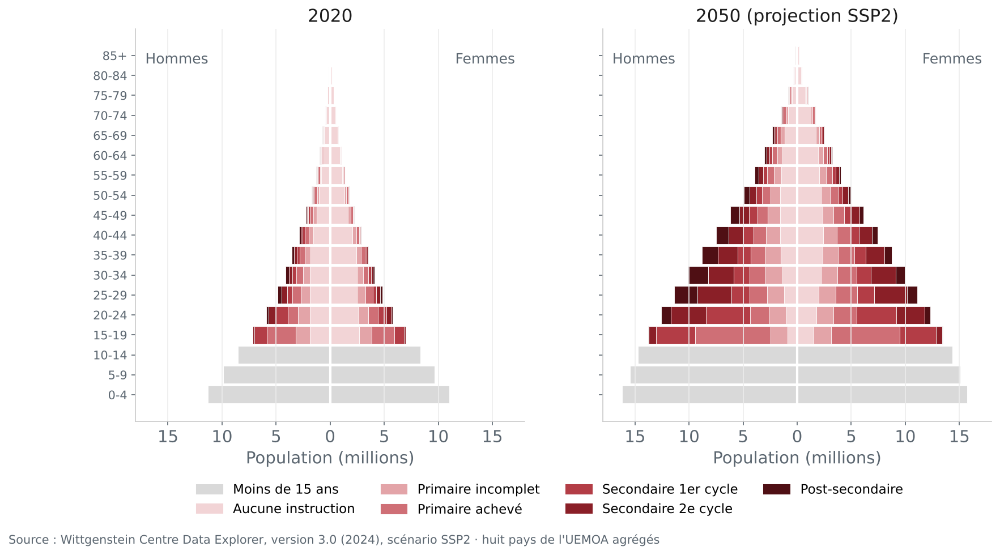

Jour 1 · Fondements de l’analyse démographique — Formation régionale UEMOA
Département de sociologie, UQAM
SSAPOPLAB
Département de démographie, UdeM
ISSP, Université Joseph Ki-Zerbo
ISSP, Université Joseph Ki-Zerbo
23 novembre 2026
| Bloc | Durée | |
|---|---|---|
| 1 | Présentations | 10 min |
| 2 | Introduction : la semaine et notre façon d’apprendre | 15 min |
| 3 | Que veut dire « mesurer une population » ? | 40 min |
| 4 | Les phénomènes démographiques dans l’UEMOA : mesures et explications | 75 min |
| 5 | La transition démographique et ses conséquences | 60 min |
Pause à 10 h 30. Fin vers 12 h 35.
En une phrase chacun :
| Jour | Thème |
|---|---|
| Lundi | Fondements : indicateurs et dynamiques démographiques |
| Mardi | Inégalités territoriales et sociales, méthodes avancées |
| Mercredi | Nouvelles sources de données et data science |
| Jeudi | Prospective et scénarios |
| Vendredi | Des analyses aux outils de décision |
| Samedi | Restitutions et feuille de route régionale |
Fil rouge : chaque équipe pays construit une note d’analyse sur son pays, section par section, et la présente samedi.
| Horaire | Bloc |
|---|---|
| 8 h 30 – 9 h | Retour sur l’exercice de la veille |
| 9 h – 12 h 30 | Cours |
| 14 h – 15 h 30 | Labo sur données réelles |
| 15 h 45 – 17 h 15 | Travail en équipe pays |
| 17 h 15 – 17 h 30 | Exercice pour le lendemain |
| Révolution | Ce qu’elle change |
|---|---|
| 1. Des données | Ce que nous analysons : volume, vitesse et variété ; des textes, des images, des voix, pas seulement des chiffres |
| 2. Informatique | Ce que nous pouvons calculer : puissance de calcul et stockage qui doublent tous les deux à trois ans, apprentissage automatique |
| 3. De l’apprentissage | Comment nous apprenons : les savoirs vieillissent vite, la capacité d’apprendre devient la compétence clé |
| 4. Des grands modèles de langage | Qui fait le travail analytique : depuis 2022, une machine écrit du code, interprète des résultats et rédige du texte |
Devise de la semaine : faire confiance, mais toujours vérifier.
L’objectif n’est pas de tout retenir en six jours, mais de repartir capable d’apprendre seul une méthode nouvelle.
| Texte | Ce qu’il apporte |
|---|---|
| Preston (1995), « Where is US demography headed? » | La démographie comme science de la mesure, utile à l’action publique |
| Greenhalgh (1996), « The social construction of population science » | Mesurer n’est jamais neutre : catégories, institutions, finalités politiques |
| Tabutin (1997), « Les systèmes d’information en démographie » | La démographie dépend de ses sources : recensements, enquêtes, état civil |
| Cesare et al. (2018), « Promises and pitfalls of using digital traces » | Les nouvelles données ne règlent pas ces questions, elles les déplacent |
Vous n’avez pas à les lire : je vous en présente l’essentiel. Les parties 4 et 5 s’appuient sur les données de vos pays et sur d’autres références, données au fil des diapositives.
Que veut dire « mesurer une population » ? Et que permet cette mesure quand il faut décider ?
Pour commencer :
Quand votre institut publie un indice synthétique de fécondité de 4,6, qu’est-ce qui est réellement mesuré ? Et qu’est-ce qui ne l’est pas ?
La démographie progresse en mesurant mieux.
La démographie est une science socialement construite.
| Preston | Greenhalgh | |
|---|---|---|
| Question posée | Comment rendre la démographie plus performante ? | Quelle est la nature sociale de la démographie ? |
| Statut de la théorie | Secondaire : la rigueur empirique prime | Insuffisant : il manque une théorie sociale |
| Lien avec l’action publique | Une responsabilité | Une dépendance |
| Ce qu’il faut pour avancer | De meilleures données et méthodes | Plus de réflexivité sur les catégories |
Ils ne s’opposent pas sur les faits, mais sur la finalité de la discipline.
La démographie est autant une science des sources que des idées.
Le programme des Enquêtes démographiques et de santé (EDS / DHS) a fourni pendant près de 40 ans une grande partie des indicateurs de fécondité et de mortalité des pays de l’UEMOA.
Question : dans votre pays, combien d’indicateurs clés dépendent d’une EDS ? Qui financera la prochaine ?
Cesare et al. (2018) : les traces numériques (réseaux sociaux, téléphonie, données satellitaires) promettent des données plus rapides et moins chères…
…mais elles posent les mêmes questions sous une autre forme : qui est visible, qui est invisible, qui contrôle les données ?
Nous y reviendrons mercredi.
Preston nous montre ce que la démographie sait faire. Greenhalgh nous montre ce qu’elle oublie de penser. Tabutin nous montre comment elle navigue entre les deux.
Devant chaque chiffre de ce matin, trois questions :
Population de demain = population d’aujourd’hui + (naissances − décès) + (immigrants − émigrants)
(naissances − décès) = accroissement naturel · (immigrants − émigrants) = solde migratoire
| Pays | Population (millions) | ISF | Espérance de vie | Moins de 15 ans (%) | Âge médian |
|---|---|---|---|---|---|
| Bénin | 14,3 | 4,6 | 60,8 | 41,7 | 18 |
| Burkina Faso | 23,3 | 4,2 | 61,1 | 42,1 | 18 |
| Côte d’Ivoire | 31,5 | 4,3 | 61,9 | 41,1 | 19 |
| Guinée-Bissau | 2,2 | 3,8 | 64,1 | 39,0 | 20 |
| Mali | 24,1 | 5,6 | 60,4 | 46,3 | 16 |
| Niger | 26,6 | 6,1 | 61,2 | 46,8 | 16 |
| Sénégal | 18,3 | 3,8 | 68,7 | 38,4 | 20 |
| Togo | 9,4 | 4,2 | 62,7 | 39,7 | 19 |
| Monde | 8 127 | 2,3 | 73,2 | 24,9 | 31 |
Source : Nations Unies, World Population Prospects 2024. Environ 150 millions d’habitants au total.

L’ISF des Nations Unies n’est pas celui de votre dernière enquête nationale.
Exercice (5 min, par pays) : comparez l’ISF 2023 du tableau avec celui de votre dernière EDS ou MICS. L’écart vous semble-t-il important ? D’où peut-il venir ?
Déterminants proches (Davis et Blake, 1956 ; Bongaarts, 1978) : la fécondité ne change que par quatre canaux.
| Canal | Au Sahel |
|---|---|
| L’union (âge au mariage, célibat, rupture) | Mariage précoce des filles |
| La contraception | Faible prévalence, besoins non satisfaits |
| L’avortement provoqué | Mal mesuré, souvent clandestin |
| L’infécondabilité post-partum (allaitement, abstinence) | Longue : principal frein à la fécondité |
Causes profondes, qui passent par ces canaux : théories de la partie 5, diffusion des normes (Cleland et Wilson, 1987), ralentissements de la baisse en Afrique (Bongaarts, 2006 ; Schoumaker, 2019).

Sans état civil complet, la mortalité n’est pas observée, elle est estimée :
Plus l’âge est élevé, plus l’estimation est fragile. Ce que l’on sait le moins bien, c’est la mortalité des adultes.
| Explication | Ce qui fait baisser la mortalité |
|---|---|
| McKeown (1976) | Le niveau de vie et la nutrition, plus que la médecine |
| Szreter (1988) | L’action publique : eau potable, assainissement, hygiène |
| Preston (1975) | À revenu égal, l’espérance de vie progresse : la santé publique compte plus que le revenu |
| Caldwell (1986) | Sri Lanka, Kerala, Costa Rica : faible mortalité grâce à l’instruction des femmes et à la volonté politique |
| Mosley et Chen (1984) | Enfants : les facteurs sociaux passent par des déterminants proches (nutrition, environnement, soins…) |
UEMOA : vaccination, lutte contre le paludisme, instruction des mères, bien plus que croissance des revenus.
UEMOA : un double fardeau. Infections et mortalité maternelle et infantile restent fortes ; hypertension, diabète et cancers progressent.
Taux brut de mortalité en 2023 : Sénégal 5,6 ‰ · Burkina Faso 8,0 ‰
Un taux brut combine :
TBM = Σ (part de la population à l’âge x) × (taux de mortalité à l’âge x)
Une population jeune a peu de décès, même si les risques y sont élevés. Comparer des taux bruts, c’est comparer en partie des pyramides.
| Principe | Résultat | |
|---|---|---|
| Directe | On applique les taux par âge de chaque pays à une même structure par âge | Le TBM qu’aurait le pays avec la structure de l’UEMOA |
| Indirecte | On applique des taux de référence à la population du pays | Indice comparatif : décès observés / décès attendus |
Exemple, avec la structure par âge de l’UEMOA comme référence :
| Pays | TBM brut | TBM standardisé (structure UEMOA) | Indice comparatif |
|---|---|---|---|
| Sénégal | 5,6 ‰ | 5,0 ‰ | 0,67 |
| Burkina Faso | 8,0 ‰ | 8,3 ‰ | 1,05 |
Le Sénégal est plus avantagé qu’il n’y paraît ; le Burkina Faso, moins.
Le Niger a un taux brut de natalité supérieur de 7,3 points à celui de l’UEMOA. La méthode de Kitagawa (1955) partage cet écart :
| Composante | Niger, en points de ‰ |
|---|---|
| Effet de la fécondité (taux par âge plus élevés) | +9,7 |
| Effet de la structure (part des femmes de 15 à 49 ans) | −2,5 |
| Écart total | +7,3 |
La très forte proportion d’enfants masque une partie de la fécondité. Quand ces enfants auront 15 ans, la natalité restera forte même si la fécondité baisse : c’est l’inertie démographique.
Solde migratoire net en 2023, pour 1 000 habitants : Mali −1,7 · Burkina Faso −1,1 · Guinée-Bissau −0,7 · Sénégal −0,6 · Togo −0,2 · Bénin 0,0 · Niger 0,0 · Côte d’Ivoire +0,2
| Approche | Pourquoi part-on ? |
|---|---|
| Ravenstein (1885) ; Lee (1966) | Des facteurs d’attraction et de répulsion, et des obstacles intermédiaires |
| Néoclassique (Todaro, 1969 ; Harris et Todaro, 1970) | Un calcul individuel : l’écart de revenu espéré entre le village et la ville, ou entre deux pays |
| Nouvelle économie de la migration (Stark et Bloom, 1985) | Une stratégie du ménage pour diversifier ses risques ; les transferts en sont la contrepartie |
| Marché du travail segmenté (Piore, 1979) | La demande d’emplois peu qualifiés dans les pays d’accueil |
| Réseaux (Massey et al., 1993) | Les migrants déjà installés réduisent le coût du départ : la migration s’entretient elle-même |
| Aspirations et capacités (de Haas, 2010, 2021) | Il faut vouloir et pouvoir partir : le développement augmente d’abord la migration |

Source : Migration Data Portal
Lunette : la « crise migratoire » vise surtout les départs vers l’Europe, minoritaires. Qui définit le problème ?
Qu’est-ce qu’une « ville » ? La réponse change d’un pays à l’autre :
Question à la salle : quelle définition votre dernier recensement utilise-t-il ?
Conséquence : comparer les taux d’urbanisation des huit pays suppose d’abord d’harmoniser la définition. C’est l’argument de Greenhalgh, et un sujet pour samedi.

| Phase | Mortalité | Natalité | Accroissement naturel |
|---|---|---|---|
| 1. Régime ancien | Élevée, avec des crises | Élevée (normes, religion, mariage) | Faible |
| 2. Baisse de la mortalité | Baisse rapide | Reste élevée | Fort, croissant |
| 3. Baisse de la natalité | Baisse plus lente | Baisse | Fort, puis en baisse |
| 4. Régime moderne | Faible et stable | Faible, fluctuante | Faible, voire négatif |
Europe : de 1740 à 1940 environ. Pays du Sud : plus rapide, dans des conditions économiques plus précaires.
| Explication | Mécanisme principal |
|---|---|
| Notestein (1945) | Mortalité en baisse, urbanisation, modernisation : les familles nombreuses deviennent coûteuses |
| Davis (1963) | Réponses multiples : mariage retardé, célibat, contraception, avortement, migration |
| Coale (1973) | Trois conditions : choix conscient, intérêt à limiter, moyens disponibles |
| Caldwell (1976) | Les flux de richesses entre générations s’inversent |
| Becker (1991) | Arbitrage entre le nombre et la « qualité » des enfants |
Limite commune : un fait stylisé, pas une explication. D’où le pluriel de Mason (1997) : des transitions.
| Perspective | Ce qu’elle examine | Question qu’elle pose à la démographie |
|---|---|---|
| Antiraciste | Comment les catégories raciales et ethniques sont construites, et comment elles produisent ou légitiment des hiérarchies entre groupes | Nos catégories et nos explications « culturelles » de la fécondité naturalisent-elles des différences entre groupes ? |
| Féministe | Les rapports de pouvoir entre les sexes : division du travail, contrôle de la sexualité et de la reproduction | Qui décide de la fécondité ? Que mesure-t-on des hommes, de la contrainte, de la violence ? |
| Décoloniale | La « colonialité du savoir » : les normes, les catégories et les agendas définis au Nord et présentés comme universels | Qui définit ce qu’est une population « en retard », et au nom de quel modèle ? |
La théorie est construite sur les trajectoires européennes. Les autres régions sont pensées comme « en retard » ou « en transition incomplète ».
L’histoire européenne devient la norme universelle.
La fécondité est traitée comme un comportement agrégé, une réponse « rationnelle » aux contraintes.
Où sont les rapports de genre, le pouvoir reproductif, la contrainte, l’accès inégal à la contraception ?
La transition est liée historiquement aux politiques coloniales, aux politiques de population et aux interventions internationales sur la reproduction.
La fécondité n’est pas qu’un choix : elle est aussi gouvernée.
Discussion (10 min) : une réconciliation est-elle possible ? Que faudrait-il changer, concrètement, dans la façon dont votre institut mesure la population ?
D’après Tabutin et Schoumaker (2004) :
Question : vingt ans plus tard, dans quel modèle placeriez-vous votre pays ?



Quand la part des personnes en âge de travailler augmente, l’économie peut croître plus vite (Bloom, Canning et Sevilla, 2003), à condition que :
Le dividende n’est pas automatique : c’est une opportunité, pas une garantie. Les institutions publiques y jouent un rôle décisif.

Pour Lutz et al. (2019), c’est l’éducation, plus que la structure par âge, qui produit le dividende. Un pays qui gagne des adultes sans les scolariser n’en tirera qu’un faible bénéfice.
Source : Wittgenstein Centre Data Explorer, version 3.0 (2024), scénario SSP2, huit pays agrégés.
| 2023 | 2050 | Écart | |
|---|---|---|---|
| Population totale | 150 M | 268 M | +118 M (+79 %) |
| Enfants d’âge scolaire (6-16 ans) | 43 M | 63 M | +19 M (+45 %) |
| Population de 15-64 ans | 82 M | 167 M | +85 M |
| Population de 65 ans et plus | 4,2 M | 12,1 M | multipliée par 2,9 |
Source : World Population Prospects 2024, variante moyenne, huit pays agrégés.
Lunette : ces chiffres reposent sur des hypothèses (une fécondité d’environ 3 enfants par femme en 2050). Changer l’hypothèse change les besoins : c’est le sujet de jeudi.
Sur un papier, sans nom :
Fécondité
Mortalité
Migration
Perspectives critiques
Dividende démographique
Données
Formation UEMOA · Jour 1 · Département de sociologie, UQAM · SSAPOPLAB